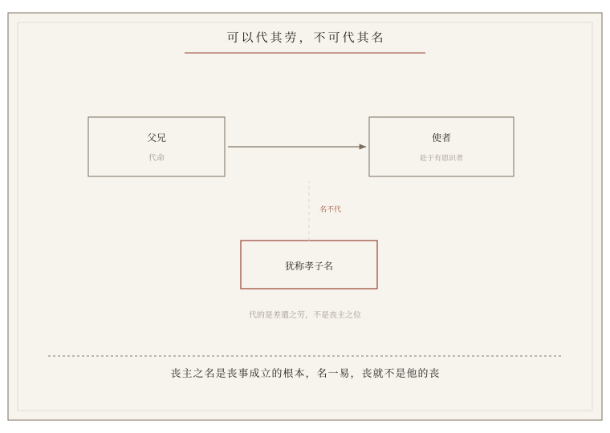

檀弓上 · 三·一百零四 · 第 307 课
父兄命赴者。
说什么事：报丧之事，由死者的父兄代命使者前往；士则主人亲自命之。
落在哪一层：代劳而不代名。论「虽代命之，犹称孝子名」。
为何编在此位：上一课六事并作，末及「复」；此课紧接其后，是复后的第一件对外之事——报丧。
【经】父兄命赴者。
【注】謂大夫以上也，士主人親命之。
【疏】「父兄命赴者」，亦复后之事。赴谓死者生时于他人有恩识者，今死，则其家宜使人往相赴告也。《士丧礼》则孝子自命赴者；若大夫以上，则父兄命之也。何以然？尊许其病深，故使人代命之也。虽代命之，犹称孝子名也。
父兄 死者的父辈与兄辈。此为家中尊长。
命 差遣、吩咐。
赴 报丧。赴，急走；以丧告人曰赴，取急趋之义。后世作「讣」。
赴者 往报丧的使者。
恩识 疏语。恩，受其恩；识，相识。谓生前有恩义往来的故旧。
尊许其病深 疏语。尊者许其悲痛之深，故允许代命。
报丧之事，由父兄代命使者前往。
此节十字，讲的是「谁去说」与「以谁的名义说」两件事。
注先说范围：大夫以上，父兄代命；士，主人亲命。这是一个按爵等分的界线。
疏说理由：「尊许其病深，故使人代命之也。」——位尊者的丧事更繁，来吊者更多，报丧之使也更多；而孝子此时正当悲痛最深之际，不能一一亲自差遣。礼许他由父兄代劳。
但疏末一句最重：「虽代命之，犹称孝子名也。」
这七个字，把「代」的边界划得极清：可以代的是「命」（差遣之劳），不可以代的是「名」（丧主之名）。使者出去报丧，说的是「某之父（母）卒」，不是「某之兄命我来告」。报丧这件事，只有一个主体：孝子。父兄替他跑腿，不替他当丧主。
这就是礼的精密处：它承认人在极痛时无力办事，于是允许人代劳；但它同时守住一件事——丧事的主体是那个失去父母的人，这一点不可转让。
第一层 代劳与代名的分界 世间许多「代」，代着代着就把名也代了。礼在此立一条线：可以代其劳，不可代其名。这条线在丧礼中尤其硬——丧主之名，是丧事成立的根本；名一易，丧就不是他的丧了。
今日亦然：代签、代出席、代致词，都是代劳；若连「谁在办这件事」也代了，就不是帮忙，是顶替。
第二层 「尊许其病深」的分寸 这句话里有一个不常见的宽容：礼承认位尊者在丧中也可以「无力」。通常的印象是位愈尊则礼愈严；此处反是——位愈尊，礼愈许其不能亲办细事。这不是优待，是体贴：丧事规模愈大，孝子愈被事务缠住，愈需要有人替他挡住。
第三层 「恩识」二字 疏释「赴」的对象：「死者生时于他人有恩识者。」这一句把报丧的范围定了：不是遍告天下，是告那些与死者有过来往的人。礼连「告谁」都有界——报丧不是发通告，是通知该通知的人。
与今日何干 今人办丧，多在群里发一条消息。此节问的是两件事：谁去说（可以托人），以谁的名义说（不可托人）；告谁（有恩识者，不是所有人）。
| 左 | 右 |
|---|---|
| 父兄 | 家中尊长 |
| 命 | 差遣 |
| 赴者 | 报丧之使 |
| 大夫以上 | 代命 |
| 士 | 主人亲命 |
| 尊许其病深 | 代劳之由 |
| 犹称孝子名 | 不代其名 |
| 有恩识者 | 告谁 |
画一处丧家堂下之门，视点平视。门内阶上，一位老者（侧身、右手前指作吩咐之状）正对门外一名持简的使者说话。门之左侧，一位服丧者（背向观者、伏于席上、头低垂）独处一隅，不与二人相对。使者手持一卷竹简，简端向上。不写文字、不画人面细节。赭色只用在使者手中那卷竹简的系绳，与丧服者席边的一只空陶盂。
